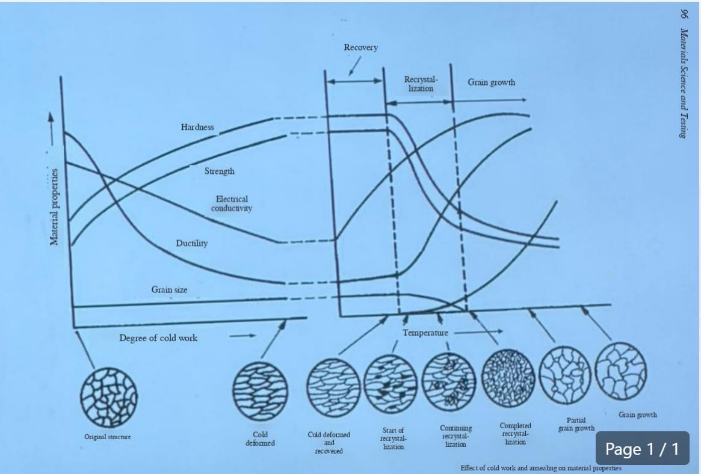
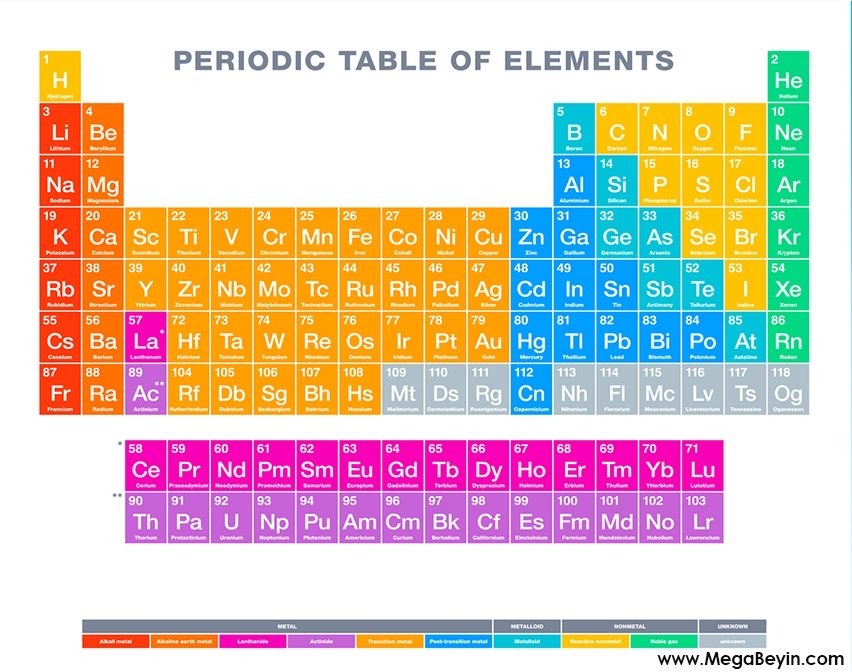

The diagram shows how a metal's properties change during cold working and then during heating (annealing). As cold work increases, the grains become elongated and dislocations build up, so hardness and strength increase (strain hardening) while ductility and electrical conductivity decrease. On annealing, three stages occur: (1) Recovery – internal stresses are relieved and conductivity rises, but hardness, strength and grain shape barely change; (2) Recrystallization – new strain‑free equiaxed grains replace the deformed ones, so hardness and strength drop sharply and ductility is restored; (3) Grain growth – at higher temperatures the new grains grow larger, further lowering strength and raising ductility.

In the periodic table, the vertical columns are called groups. They are divided into two types: A groups (main group elements) and B groups (transition metals).
A metallic bond forms between metal atoms that give up their valence electrons. These electrons become a "sea" (cloud) of free electrons shared by all the atoms, and the positive metal ions are held together by their attraction to this electron cloud. The bond is non‑directional, which explains why metals are good conductors of electricity and heat, ductile and malleable, and have a shiny lustre.